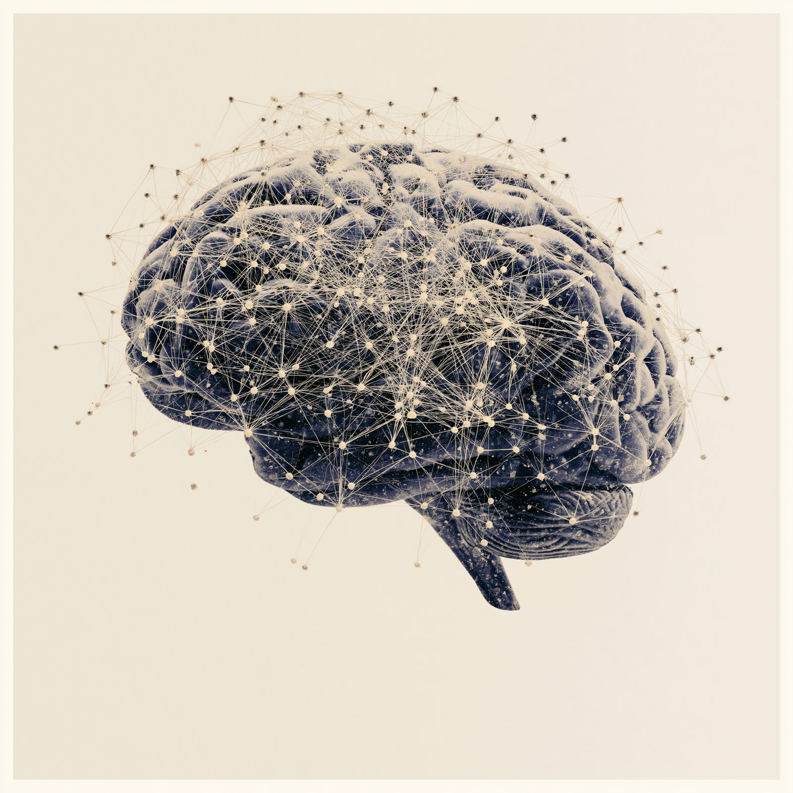

Designing a Company Brain
What it takes to turn an organization's scattered knowledge and relationships into something it can actually query.

Every company already has a brain. It is just spread across inboxes, CRM notes, shared drives, and the memory of whoever has been there the longest.
A company brain gathers all of that into one place the organization can query, and that AI can reason over. The pitch is easy to say and hard to build: give the institution access to its own collective knowledge, and to the web of relationships underneath it, without depending on the one person who happens to remember.
Here is how I think about designing that system.
Same idea, different desks
- Law firmSurface a judge's prior rulings and the opposing counsel you have faced before, in seconds instead of an afternoon.
- RecruitingNotice when a hiring manager you know has moved to a new company, so the relationship travels with them.
- Real estateTrack which tenants are on the move and which leases are coming up for renewal.
- Private equityPull comparable deals to price and pressure-test the one in front of you.
Five principles the system runs on
-
Separate raw from refined
Keep untouched source material distinct from the curated knowledge layer built on top of it. You can always trace back to the original.
-
Organize around memory
Structure it the way memory works: episodic for events, semantic for facts and relationships, procedural for how things get done.
-
Treat relationships as records
A connection is not a vague link. It carries a date, a source, and a confidence level, like any other fact.
-
Make every fact accountable
Origin and reliability travel with the fact. Nothing floats free of where it came from.
-
Govern how knowledge is promoted
New information earns its way to institutional truth through human validation. Promotion is a decision, not a default.
A company brain is only as trustworthy as the sources it can point back to.
Five things the model actually does
- 01
Search becomes synthesis
It reads across many documents and gives you an answer, not a list of links.
- 02
Conversation becomes records
It structures messy back-and-forth into organized, queryable data.
- 03
Vague becomes precise
It translates an imprecise question into an exact, structured search.
- 04
Volume becomes signal
It processes far more than a person can and surfaces what matters.
- 05
Names become paths
It walks the relationship graph to find how two people are actually connected.
None of this is a feature you switch on. It is infrastructure, built on years of engineering, and AI is finally the piece that makes the investment worth making.
The company brain has been sitting in the building the whole time. The work is wiring it together.